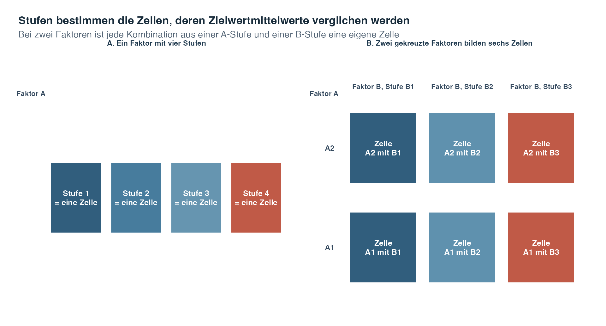
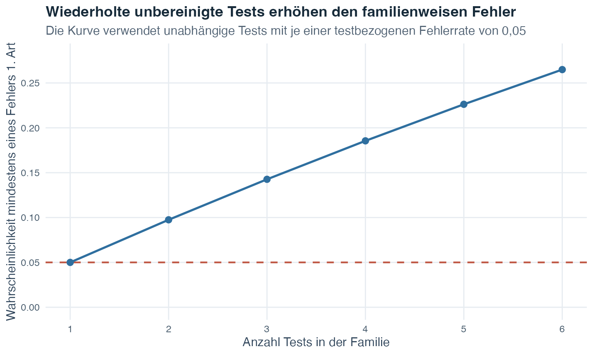
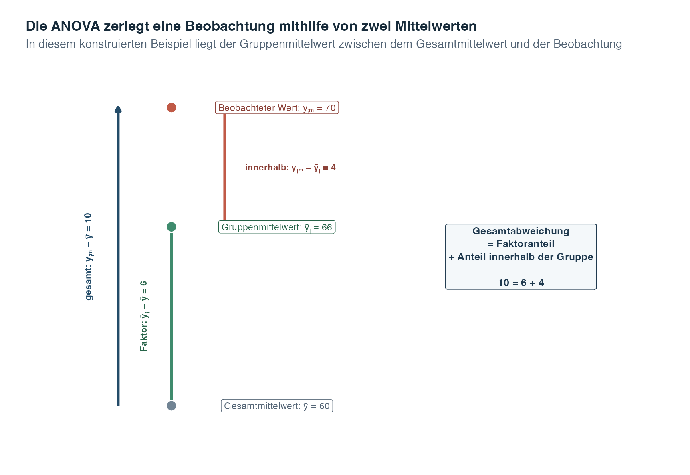
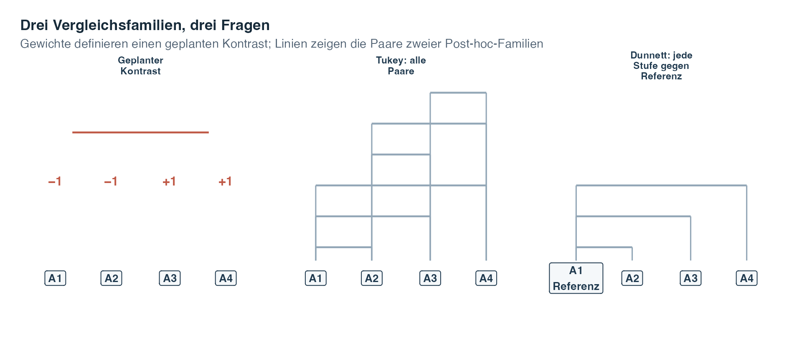
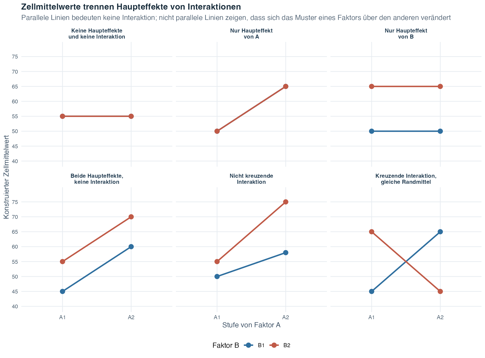
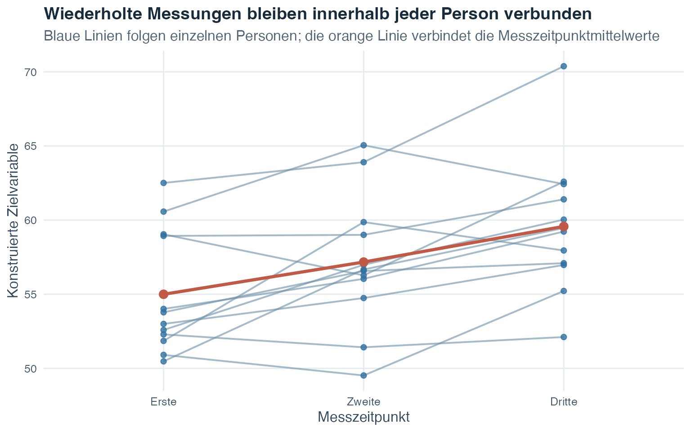
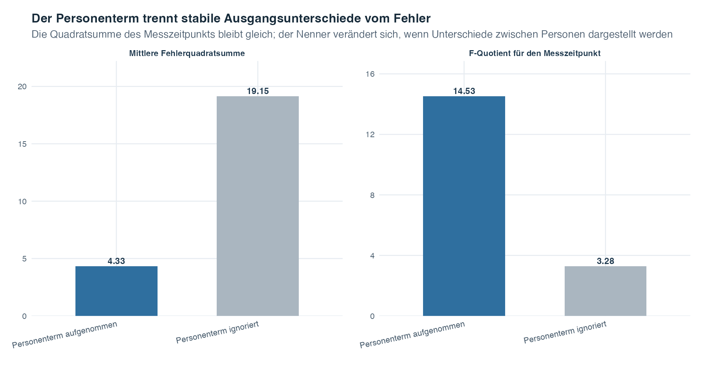

Übungsblatt
Wähle PDF zum Drucken oder Word zum Bearbeiten.
Einführung in die Statistik · Thema 8
Ein t-Test vergleicht zwei Mittelwerte. Thema 3 trennte zwei Designs: Ein t-Test für unabhängige Stichproben vergleicht zwei Gruppen aus unterschiedlichen Fällen. Ein t-Test für verbundene Stichproben vergleicht zwei miteinander verknüpfte Messungen, oft von denselben Personen. Was tun wir, wenn die Frage von zwei auf drei, vier oder noch mehr Mittelwerte anwächst?
Die ANOVA ist der breitere Rahmen für diesen nächsten Schritt. Ein Faktor ist eine kategoriale erklärende Variable, deren Kategorien Stufen heissen. Eine einfaktorielle ANOVA mit unabhängigen Gruppen erweitert den unabhängigen t-Test auf mehrere Stufen, die von unterschiedlichen Fällen besetzt werden. Eine einfaktorielle ANOVA mit Messwiederholungen erweitert den verbundenen t-Test auf mehrere verknüpfte Stufen oder Zeitpunkte, die bei denselben Fällen gemessen werden. Wenn für jedes Paar ein eigener unbereinigter t-Test durchgeführt wird, wird jeder Test beurteilt, ohne die anderen Tests derselben Menge zu berücksichtigen. So entstehen viele Gelegenheiten für einen Fehler 1. Art, also einen falsch positiven Befund, obwohl die zugehörige Nullhypothese wahr ist.
Die Varianzanalyse, abgekürzt ANOVA, beginnt mit einem Omnibustest. Omnibus bedeutet, dass der Test eine einzige übergeordnete Frage über alle Gruppen hinweg stellt:
Gibt es Evidenz dafür, dass sich mindestens zwei Populationsmittelwerte unterscheiden?
Der Name kann zunächst verwirrend wirken. Die ANOVA vergleicht Mittelwerte, indem sie Variation analysiert. Sie trennt die gesamte Variation der quantitativen Zielvariable in Variation, die mit der Gruppenzugehörigkeit verbunden ist, und Variation, die innerhalb der Gruppen verbleibt. Das Verhältnis dieser beiden Teile ergibt die \(F\)-Teststatistik.
Die Methode für zwei Mittelwerte ist damit nicht verschwunden. Im Spezialfall von genau zwei unabhängigen Gruppen prüfen der gewöhnliche t-Test mit gepoolter Varianz und die einfaktorielle ANOVA mit festem Faktor unter denselben Bedingungen homogener Varianz dieselbe Gleichheit. Für ihre Teststatistiken gilt
\[ F(1,N-2)=t(N-2)^2. \]
Durch das Quadrieren geht das Vorzeichen von \(t\) verloren. \(F\) zeigt deshalb nicht, welcher Mittelwert höher ist, sondern fragt nur, ob sich die beiden Mittelwerte unterscheiden. Der zweiseitige t-Test und dieser \(F\)-Test mit einem Zählerfreiheitsgrad ergeben somit denselben p-Wert. Besonders nützlich wird die ANOVA, wenn eine übergeordnete Frage mehr als zwei Mittelwerte oder mehr als einen Faktor koordinieren muss.
Das ist keine Abkehr von der Regression. Thema 7 zeigte, wie ein kategorialer Prädiktor mit Dummy-Variablen dargestellt und wie mehrere zusammengehörige Koeffizienten gemeinsam geprüft werden können. Die ANOVA verwendet dieselbe Idee des linearen Modells und ordnet sie um Faktoren, Gruppenmittelwerte und Quadratsummen an.
Leitfrage: Wie kann ein einziger Globaltest beim Vergleich mehrerer Gruppenmittelwerte ihre Trennung gegen die verbleibende Variation innerhalb der Gruppen abwägen?
| Sprache der multiplen Regression | Sprache der ANOVA | Dieselbe zugrunde liegende Idee |
|---|---|---|
| Quantitative Zielvariable | Quantitative Zielvariable | Für jede Beobachtungseinheit wird ein gemessener Wert modelliert |
| Kategorialer Prädiktor | Faktor | Die Kategorienzugehörigkeit hilft, den angepassten Mittelwert festzulegen |
| Referenzkategorie und Dummy-Koeffizienten | Faktorstufen und Gruppenvergleiche | Mehrere Kategorien benötigen mehrere aufeinander abgestimmte Parameter |
| Globaler oder verschachtelter \(F\)-Test | Omnibus-\(F\)-Test | Eine gemeinsame Nullhypothese wird geprüft, indem dargestellte und verbleibende Variation verglichen werden |
| Interaktionsterm | Faktorinteraktion | Die Beziehung eines Prädiktors oder Faktors hängt von einem anderen ab |
Das Vokabular verändert sich, weil sich der wissenschaftliche Schwerpunkt verändert. In der Regression beginnen wir oft mit dem Lesen einzelner Steigungen. In der ANOVA beginnen wir mit dem gesamten Faktor und fragen, ob alle zugehörigen Populationsmittelwerte gleich sein können. Angepasste Werte, Residuen, Quadratsummen und die \(F\)-Logik bleiben mit dem bereits Gelernten verbunden.
Der Omnibus-\(F\)-Test fragt, ob sich irgendwelche Populationsmittelwerte unterscheiden. Er sagt nicht, welche Mittelwerte sich unterscheiden. Ein geplanter Kontrast ist ein gezielter Gruppenmittelwertvergleich, der vor der Untersuchung der Zielvariablen festgelegt wird. Ein Post-hoc-Vergleich wird danach ausgewählt. Diese Verfahren beantworten spezifischere Fragen und verwenden eine Bereinigung, wenn mehrere zusammengehörige Schlussfolgerungen geprüft werden.
Nach Abschluss dieses Themas solltest du:
Die ANOVA verwendet eine quantitative Zielvariable, also den gemessenen Wert, dessen Mittelwerte verglichen werden, und eine oder mehrere kategoriale erklärende Variablen, die Faktoren genannt werden.
Eine Stufe ist eine Kategorie eines Faktors. Ist der Faktor beispielsweise eine Studienbedingung mit vier Kategorien, hat er vier Stufen. Eine Zelle ist eine beobachtete Gruppe, die durch eine Kombination von Faktorstufen definiert wird. In einer einfaktoriellen ANOVA bildet jede Stufe eine Zelle. In einem Design mit zwei Faktoren bildet jede Kombination aus einer Stufe von Faktor A und einer Stufe von Faktor B eine eigene Zelle.
| Begriff | Definition für den Einstieg | Beispielstruktur |
|---|---|---|
| Zielvariable | Quantitative Messung, deren Mittelwerte verglichen werden | Ein Lernpunktwert pro Fall |
| Faktor | Kategoriale erklärende Variable | Studienbedingung |
| Stufe | Eine Kategorie eines Faktors | Referenzbedingung |
| Zelle | Fälle mit derselben Kombination von Faktorstufen | Stufe 1 von Faktor A zusammen mit Stufe 2 von Faktor B |
| Balanciertes Design | Gleich viele Fälle in jeder relevanten Gruppe oder Zelle | 40 Fälle in jeder von vier Bedingungen |
| Unbalanciertes Design | Ungleiche Gruppen- oder Zellgrössen | 30, 35, 40 und 55 Fälle |
Lies die Tabelle von der Messung nach aussen. Bestimme zuerst die quantitative Zielvariable. Bestimme danach den kategorialen Faktor und liste seine Stufen auf. Bestimme anschliessend die Zellen, die durch die genauen Kombinationen der Stufen entstehen. Erst wenn diese Rollen geklärt sind, solltest du die Beobachtungen zählen und entscheiden, ob das Design balanciert ist. Diese Reihenfolge verhindert einen häufigen Fehler: Die aufgezeichneten Kategoriencodes selbst als sinnvolle quantitative Abstände zu behandeln.
Das Wort Zelle ist in einem Design mit einem Faktor einfach, kann aber leichter verwechselt werden, sobald ein zweiter Faktor hinzukommt. Die nächste Abbildung stellt beide Strukturen nebeneinander.

Lies Feld A von links nach rechts. Ein Faktor besitzt vier Stufen, und jede Stufe bezeichnet eine Gruppe von Fällen. Somit gibt es vier Zellen. Wähle in Feld B eine Zeile von Faktor A und eine Spalte von Faktor B. Ihr Schnittpunkt ist eine Zelle. Zwei A-Stufen, die mit drei B-Stufen gekreuzt werden, bilden daher \(2\times3=6\) Zellen.
Die Kästen zeigen Positionen im Design und keine numerischen Werte der Zielvariable. Ein beobachteter Fall gehört aufgrund seiner Faktorstufen zu genau einer Zelle. Die Zielvariablen innerhalb dieser Zelle werden später durch einen Zellmittelwert zusammengefasst. Die Farben helfen, die Spalten auseinanderzuhalten, codieren aber keine höheren oder niedrigeren Werte. Das Diagramm sagt auch nicht, ob das Design balanciert ist. Die Balance hängt davon ab, wie viele Fälle sich tatsächlich in jeder Zelle befinden.
Balance ist eine Eigenschaft des Designs und keine Voraussetzung der ANOVA. Eine einfaktorielle ANOVA kann ungleiche Gruppengrössen verwenden. Balance macht Arithmetik und Interpretation jedoch besonders klar. In faktoriellen Designs beeinflusst ein Ungleichgewicht zudem, wie verschiedene Effekte voneinander getrennt werden. Die gewählte Analyse muss deshalb sorgfältig dokumentiert werden.
Die Beobachtungseinheit ist der Fall, der eine Zielvariable zur Analyse beiträgt. In einer Studie mit unabhängigen Gruppen gehört jede Person nur zu einer Gruppe und trägt eine Zielvariable zu diesem Vergleich bei. Wenn wir die Einheit bestimmen, können wir beurteilen, ob die Fälle unabhängig sind.
Das Design bestimmt die möglichen Schlussfolgerungen. Zufallszuweisung bedeutet, dass der Zufall Fälle den Faktorstufen zuordnet. Wird sie in einem Experiment korrekt durchgeführt, können Gruppenunterschiede eine kausale Interpretation für den manipulierten Faktor stützen. Ohne Zufallszuweisung kann eine ANOVA weiterhin Mittelwertunterschiede beschreiben, aber für sich allein nicht belegen, dass der Faktor sie verursacht hat.
Stelle vor jeder Berechnung zwei Fragen: Wie viele Faktoren gibt es, und erscheint dieselbe Person in mehr als einer Bedingung? Die Antworten bestimmen das Design.
| Design | Anordnung der Beobachtungen | Was es erweitert |
|---|---|---|
| Einfaktoriell mit unabhängigen Gruppen | Ein Faktor; unterschiedliche Personen befinden sich auf seinen Stufen | t-Test für unabhängige Stichproben bei zwei Stufen |
| Einfaktoriell mit Messwiederholungen | Ein Faktor; dieselben Personen werden auf allen Stufen oder zu allen Zeitpunkten gemessen | t-Test für verbundene Stichproben bei zwei Stufen |
| Mehrfaktoriell mit unabhängigen Gruppen | Zwei oder mehr Faktoren; unterschiedliche Personen befinden sich in den gekreuzten Zellen | Einfaktorielle ANOVA, nun mit Haupteffekten und Interaktionen |
| Mehrfaktoriell mit Messwiederholungen | Zwei oder mehr Faktoren innerhalb von Personen; dieselben Personen liefern verknüpfte Beobachtungen für deren Kombinationen | Einfaktorielle ANOVA mit Messwiederholungen, nun mit mehreren Effekten innerhalb von Personen und Interaktionen |
| Gemischtes Design | Mindestens ein Faktor zwischen Gruppen und mindestens ein Faktor innerhalb von Personen | Gruppenunterschiede und Veränderungen innerhalb von Personen in einem Design |
Werden beispielsweise drei unterschiedliche Gruppen einmal gemessen, liegt ein Design mit unabhängigen Gruppen vor. Werden dieselben Personen zu drei Zeitpunkten gemessen, liegt ein Design mit Messwiederholungen vor. Werden mehrere Gruppen zu mehreren Zeitpunkten untersucht, ist das Design gemischt: Die Gruppenzugehörigkeit liegt zwischen Personen, der Messzeitpunkt innerhalb von Personen.
Gemischtes Design bezeichnet hier die Kombination von Faktoren zwischen und innerhalb von Personen. Später bezeichnet ein gemischtes Modell mit festen und zufälligen Effekten ein Modell, das beide Effektarten enthält. Diese Ideen begegnen einander häufig, doch die beiden Begriffe beantworten unterschiedliche Fragen. Der eine beschreibt, wie Beobachtungen erhoben wurden, der andere, wie Effekte dargestellt werden.
Leitfrage: Wenn eine Datenzeile zu einer Person gehört, darf dieselbe Person sinnvollerweise auf einer weiteren Faktorstufe erscheinen? Die Antwort zeigt, ob diese Zeilen als unabhängig behandelt werden dürfen.
Bei \(p\) Gruppen gibt es
\[ \frac{p(p-1)}{2} \]
verschiedene paarweise Vergleiche. Vier Gruppen ergeben bereits sechs Paare, zehn Gruppen 45. Wenn jeder Vergleich auf demselben unbereinigten Niveau getestet wird, steigt die Wahrscheinlichkeit mindestens eines falsch positiven Befunds in der Familie. Die familienweise Fehlerrate ist die Wahrscheinlichkeit, innerhalb dieser definierten Menge von Schlussfolgerungen mindestens einen Fehler 1. Art zu begehen.
Für \(m\) unabhängige Tests, die je mit der Fehlerwahrscheinlichkeit \(\alpha\) für einen Fehler 1. Art durchgeführt werden, lautet die exakte familienweise Fehlerrate
\[ \alpha_{\text{Familie}}=1-(1-\alpha)^m. \]
Das Wort Familie bezeichnet die Menge der gemeinsam betrachteten Schlussfolgerungen. Die Unabhängigkeitsbedingung ist wichtig, weil paarweise Vergleiche aus denselben Gruppen häufig Beobachtungen teilen und deshalb abhängig sind.

Die horizontale Achse zählt, wie viele unabhängige Tests zur Familie gehören. Die vertikale Achse zeigt die Wahrscheinlichkeit mindestens eines falsch positiven Befunds, wenn alle zugehörigen Nullhypothesen wahr sind. Der erste Punkt liegt bei 0,05, weil ein Test auf dem Niveau 0,05 durchgeführt wird. Mit jeder weiteren Gelegenheit für einen falsch positiven Befund steigt die Linie und erreicht bei sechs Tests ungefähr 0,265. Die Kurve ist weder ein ANOVA-Ergebnis noch die Fehlerrate für jede Menge abhängiger Vergleiche. Sie veranschaulicht die oben angegebene exakte Formel für unabhängige Tests.
Die Omnibus-ANOVA ersetzt diese Sammlung unbereinigter paarweiser Tests durch einen ersten Hypothesentest. Wenn dieser auf einen Unterschied hinweist, können gezielte Vergleiche mit einer zur Forschungsfrage passenden Vergleichsstrategie folgen.
Eine einfaktorielle ANOVA hat einen Faktor mit \(p\) Stufen. \(\mu_i\) sei der Populationsmittelwert auf Stufe \(i\). Die Nullhypothese lautet
\[ H_0:\mu_1=\mu_2=\cdots=\mu_p. \]
Die Alternativhypothese lautet
\[ H_1:\text{Mindestens zwei Populationsmittelwerte unterscheiden sich}. \]
Die Alternativhypothese sagt nicht, dass sich jeder Mittelwert von jedem anderen unterscheidet. Sie legt auch nicht fest, welcher Unterschied besteht. Deshalb benötigt ein signifikanter Omnibusbefund eine zweite, gezieltere Stufe, bevor einzelne Gruppen benannt werden.
Für Beobachtung \(m\) auf Stufe \(i\) schreiben wir die Zielvariable als \(y_{im}\). \(n_i\) sei die Anzahl Fälle auf Stufe \(i\), \(N=\sum_i n_i\) die Gesamtzahl der Fälle, \(\bar y_i\) der Stichprobenmittelwert auf Stufe \(i\) und \(\bar y\) der Gesamtmittelwert über alle Fälle.
Mit diesen Kennzahlen können wir die Gesamtvariation als zwei verbundene Abweichungen beschreiben.
Für jede Beobachtung gilt
\[ y_{im}-\bar y = (\bar y_i-\bar y)+(y_{im}-\bar y_i). \]
Lies diese Identität von links nach rechts:
Alle drei Terme liegen auf derselben Skala der Zielvariable. Das folgende Diagramm verwendet eine bewusst einfache Beobachtung, um zu zeigen, wie ihre vertikalen Abstände zusammenpassen, bevor irgendein Wert quadriert wird.

Beginne beim Gesamtmittelwert 60. Der Weg zum Gruppenmittelwert dieses Falls bei 66 umfasst 6 Punkte. Das ist der Faktoranteil, weil er erfasst, wo das angepasste Gruppenzentrum relativ zum Gesamtzentrum liegt. Der Weg vom Gruppenmittelwert zum beobachteten Wert 70 umfasst die verbleibenden 4 Punkte. Das ist der Anteil innerhalb der Gruppe, weil er erfasst, wie sich dieser Fall von seinem eigenen Gruppenzentrum unterscheidet. Gemeinsam überdecken der grüne und der orangefarbene Pfeil den blauen Gesamtabstand: \(10=6+4\).
Die ANOVA wendet dieselbe Zerlegung auf jede Beobachtung an. Danach quadriert sie die Abstände, damit sich positive und negative Abweichungen nicht gegenseitig aufheben, und addiert sie über alle Fälle. Die Abbildung legt nicht nahe, dass jede Beobachtung oberhalb beider Mittelwerte liegt oder dass der Faktor den Sechs-Punkte-Anteil verursacht hat. Andere Fälle können unter einem oder beiden Mittelwerten liegen, und eine kausale Interpretation hängt weiterhin vom Design ab.
Die ANOVA quadriert und summiert diese Abweichungen. Die Gesamtquadratsumme lautet
\[ SS_{\text{gesamt}} = \sum_{i=1}^{p}\sum_{m=1}^{n_i}(y_{im}-\bar y)^2. \]
Die Faktorquadratsumme, auch Quadratsumme zwischen den Gruppen genannt, lautet
\[ SS_A = \sum_{i=1}^{p}n_i(\bar y_i-\bar y)^2. \]
Die Multiplikation mit \(n_i\) ist wichtig, weil ein Gruppenmittelwert jeden Fall dieser Gruppe darstellt.
Die Fehlerquadratsumme, auch Quadratsumme innerhalb der Gruppen genannt, lautet
\[ SS_e = \sum_{i=1}^{p}\sum_{m=1}^{n_i}(y_{im}-\bar y_i)^2. \]
Die exakte Zerlegung ist
\[ SS_{\text{gesamt}}=SS_A+SS_e. \]
Fehler bedeutet hier nicht, dass jemand einen Irrtum begangen hat. Es ist die Variation, die durch die Mittelwerte der Faktorstufen in diesem Modell nicht dargestellt wird. Sie kann individuelle Unterschiede, Messvariation und jede andere nicht modellierte Quelle enthalten.
Quadratsummen wachsen mit der Anzahl Beobachtungen und können deshalb nicht direkt verglichen werden, wenn sie unterschiedlich viele freie Bestandteile haben. Freiheitsgrade bilden den nächsten Schritt.
Die Freiheitsgrade der einfaktoriellen ANOVA lauten
\[ df_A=p-1,\qquad df_e=N-p,\qquad df_{\text{gesamt}}=N-1. \]
Sie zerfallen genauso wie die Quadratsummen:
\[ df_{\text{gesamt}}=df_A+df_e. \]
Der Ausdruck Freiheitsgrade bedeutet, wie viele Informationsteile sich frei verändern können, nachdem eine Einschränkung festgelegt wurde. Stell dir drei Zahlen vor, die zusammen 5 ergeben müssen. Die ersten beiden kannst du frei wählen. Die dritte ist danach festgelegt, damit die Summe 5 wird. Die drei Zahlen haben somit nur zwei freie Bestandteile, also \(3-1\) Freiheitsgrade.
Die Zählungen der ANOVA folgen derselben Logik. Sobald der Gesamtmittelwert festliegt, können sich nur \(N-1\) Gesamtabweichungen frei verändern. Sobald \(p\) Gruppenmittelwerte mit diesem Gesamtmittelwert verbunden sind, bleiben nur \(p-1\) unabhängige Abweichungen der Gruppenmittelwerte. Innerhalb der Gruppen verbraucht die Schätzung eines Mittelwerts pro Gruppe \(p\) Bestandteile, sodass \(N-p\) Residualfreiheitsgrade verbleiben.
Ein mittleres Quadrat ist eine Quadratsumme geteilt durch ihre Freiheitsgrade:
\[ MS_A=\frac{SS_A}{df_A}, \qquad MS_e=\frac{SS_e}{df_e}. \]
Die Omnibus-Teststatistik lautet
\[ F=\frac{MS_A}{MS_e}. \]
Der Zähler beschreibt die Trennung der Gruppenmittelwerte relativ zu seinen Freiheitsgraden. Der Nenner beschreibt die verbleibende Variation innerhalb der Gruppen. Wenn die Populationsmittelwerte gleich sind und die Modellbedingungen gelten, schätzen beide mittleren Quadrate dieselbe Fehlervariation und \(F\) liegt tendenziell nahe bei 1. Grössere Werte bedeuten, dass die Gruppenmittelwerte stärker getrennt sind, als es die Variation innerhalb der Gruppen normalerweise erwarten liesse.
Dieses Verhältnis ist die zentrale Idee der ANOVA. Die nächsten beiden Felder halten die drei Gruppenmittelwerte fest und verändern nur, wie stark die Beobachtungen innerhalb dieser Gruppen streuen.

In beiden Feldern liegen die weissen Rauten bei 50, 60 und 70, und die gestrichelte Linie des Gesamtmittelwerts liegt bei 60. Die mit dem Faktor verbundene Trennung ist somit gleich. Beide Felder bestätigen dies numerisch mit \(MS_A=600.00\). Die dicken durchscheinenden Bereiche und die Punkte zeigen, was sich verändert: die vertikalen Abstände der Beobachtungen von ihrer jeweiligen Gruppenraute.
Im linken Feld sind diese Abstände kurz. Deshalb gilt \(MS_e=2.28\) und \(F=263.62\). Im rechten Feld haben sich die Gruppenmittelwerte nicht bewegt, doch die Abstände innerhalb der Gruppen sind viel länger. Der Nenner steigt auf \(MS_e=58.00\) und verkleinert den Quotienten auf \(F=10.34\). Darin liegt die gesamte visuelle Logik von \(F\): Dasselbe Signal im Zähler fällt weniger deutlich auf, wenn die Hintergrundvariation im Nenner grösser wird.
Die Zahlen bilden einen konstruierten Vergleich, der nur die Logik des Quotienten isoliert. Sie liefern keine Evidenz über eine reale Grundgesamtheit und legen keine allgemeingültige Grenze zwischen einem grossen und einem kleinen \(F\) fest. Wir benötigen weiterhin die Referenzverteilung und ihre beiden Freiheitsgrade, um zu beurteilen, wie ungewöhnlich ein beobachteter Quotient unter \(H_0\) ist.
Die \(F\)-Verteilung wird durch zwei Freiheitsgrade bestimmt, \(df_A\) und \(df_e\). Der p-Wert ist unter \(H_0\) die Wahrscheinlichkeit im rechten Verteilungsschwanz für einen \(F\)-Wert, der mindestens so gross ist wie der beobachtete.
| Quelle | Quadratsumme | df | Mittleres Quadrat | F |
|---|---|---|---|---|
| Faktor A | \(SS_A\) | \(p-1\) | \(SS_A/(p-1)\) | \(MS_A/MS_e\) |
| Fehler | \(SS_e\) | \(N-p\) | \(SS_e/(N-p)\) | |
| Gesamt | \(SS_{\text{gesamt}}\) | \(N-1\) |
Die Zeilen zeigen, welcher Quelle die Variation in diesem Modell zugeordnet wird. Die Faktorzeile misst die Trennung zwischen angepassten Gruppenmittelwerten. Die Fehlerzeile misst die Abweichungen der Fälle um diese angepassten Mittelwerte. Die Gesamtzeile enthält die gesamte Variation der Zielvariable um den Gesamtmittelwert. Lies die Faktorzeile von links nach rechts, um den Test nachzuvollziehen: Teile ihre Quadratsumme durch ihre Freiheitsgrade, um \(MS_A\) zu erhalten. Teile diesen Wert danach durch \(MS_e\) aus der Fehlerzeile, um \(F\) zu erhalten. Leere Zellen sind beabsichtigt. Fehler- und Gesamtzeile erhalten in dieser Tabelle nicht je eine eigene Omnibus-\(F\)-Teststatistik.
Ein signifikantes \(F\)-Ergebnis verwirft die Gleichheit aller Populationsmittelwerte. Es sagt noch nicht, welche Mittelwerte sich unterscheiden, ob die Unterschiede praktisch bedeutsam sind oder ob der Faktor sie verursacht hat.
Im hier entwickelten einfaktoriellen Modell werden die Faktorstufen bewusst ausgewählt, weil genau diese Bedingungen im Mittelpunkt stehen. Das wird als fester Faktor bezeichnet. Jede Beobachtung kann so geschrieben werden:
\[ y_{im}=\mu_i+\varepsilon_{im}, \]
wobei \(\varepsilon_{im}\) die Abweichung des Falls von seinem Populationsgruppenmittelwert ist. Dieses Modell setzt Folgendes voraus:
Diagnostische Grafiken beweisen keine Annahmen. Sie helfen, Muster zu erkennen, die dem Modell widersprechen. Lösche nie eine unbequeme Beobachtung nur deshalb, weil \(F\) dadurch grösser wird.
Wiederholte Messungen derselben Person sind keine unabhängigen Fälle. Sie benötigen die später in diesem Thema besprochene Messwiederholungsstruktur.
Ein Omnibusbefund sagt, dass irgendwo ein Unterschied besteht. Ein Kontrast verwandelt einen gezielten Mittelwertvergleich in eine gewichtete Summe:
\[ D=\sum_{i=1}^{p}c_i\bar y_i, \qquad \sum_{i=1}^{p}c_i=0. \]
Die Zahlen \(c_i\) sind Kontrastgewichte. Positive und negative Gewichte stellen die Stufen auf gegensätzliche Seiten des Vergleichs. Werden alle Gewichte mit derselben Zahl ungleich null multipliziert, verändert sich die Skala von \(D\), aber nicht der inhaltliche Vergleich.
Ein einfacher Kontrast vergleicht zwei Stufen. Deshalb sind nur zwei Gewichte ungleich null. Ein komplexer Kontrast kombiniert mehr als zwei Stufen. Er kann beispielsweise den Durchschnitt mehrerer aktiver Bedingungen mit einer Referenz vergleichen. Gewichte können auch ein vorab festgelegtes geordnetes Muster codieren, wenn genau dieser Trend die wissenschaftliche Hypothese ist.
Ein geplanter Kontrast wird aus der Forschungsfrage abgeleitet, bevor die Zielvariablen untersucht werden. Ein Post-hoc-Vergleich wird nach der Omnibusanalyse oder nach der Untersuchung der Daten ausgewählt. Post hoc bedeutet nicht ungültig. Die Auswahl muss jedoch ehrlich beschrieben und ihre Multiplizität berücksichtigt werden, also das zusätzliche Risiko falsch positiver Befunde durch mehrere zusammengehörige Schlussfolgerungen.

Die Teilgrafiken enthalten dieselben vier Faktorstufen, beantworten aber verschiedene Fragen. Die Wahl zwischen ihnen ist deshalb Teil der Definition der wissenschaftlichen Aussage und keine technische Entscheidung, die erst nach der Suche nach dem kleinsten p-Wert getroffen wird.
Für ein balanciertes einfaktorielles Design mit \(n\) Fällen pro Stufe hat der hier verwendete Kontrasttest die Form
\[ SS_D=\frac{nD^2}{\sum_i c_i^2}, \qquad F_D=\frac{SS_D}{MS_e}, \]
mit einem Zählerfreiheitsgrad von 1 und \(df_e\) Nennerfreiheitsgraden. Auch mehrere geplante Kontraste bilden eine Familie, wenn sie eine zusammengehörige Menge von Aussagen stützen. Die Planung allein lässt Multiplizität deshalb nicht verschwinden.
Die testbezogene Fehlerrate ist die Wahrscheinlichkeit eines Fehlers 1. Art für einen Vergleich. Die familienweise Fehlerrate, abgekürzt FWER, ist die Wahrscheinlichkeit mindestens eines Fehlers 1. Art über die definierte Familie hinweg.
Für \(m\) voneinander unabhängige Tests ergibt das Auflösen der exakten familienweisen Gleichung nach dem Niveau pro Test die Sidak-Schwelle:
\[ \alpha_{\text{Test}} = 1-(1-\alpha_{\text{Familie}})^{1/m}. \]
Diese Gleichheit gilt unter Unabhängigkeit exakt. Im balancierten Modell mit normalverteilten Fehlern, das hier verwendet wird, sind orthogonale Kontrastschätzungen und ihre Zählerquadratsummen unabhängig. Ihre Gewichtsvektoren sind orthogonal, wenn die Summe ihrer paarweisen Gewichtsprodukte null ist. Teststatistiken können in ihren Nennern dennoch dasselbe geschätzte mittlere Fehlerquadrat teilen. Orthogonalität allein garantiert deshalb nicht, dass die Tests selbst voneinander unabhängig sind. Die exakte Sidak-Gleichheit sollte nur verwendet werden, wenn die Unabhängigkeit der Tests begründet wurde.
Die Bonferroni-Schwelle lautet
\[ \alpha_{\text{Test}}=\frac{\alpha_{\text{Familie}}}{m}. \]
Bonferroni kontrolliert den familienweisen Fehler auf höchstens dem gewählten Niveau, ohne unabhängige Tests vorauszusetzen. Das Verfahren ist oft konservativ. Das bedeutet, dass der tatsächliche familienweise Fehler unter der Grenze liegen und die Teststärke sinken kann.
| Anzahl Vergleiche | Rohe FWER bei Unabhängigkeit | Sidak-Alpha pro Test bei Unabhängigkeit | Bonferroni-Alpha pro Test |
|---|---|---|---|
| 1 | 0.0500 | 0.0500 | 0.0500 |
| 2 | 0.0975 | 0.0253 | 0.0250 |
| 3 | 0.1426 | 0.0170 | 0.0167 |
| 4 | 0.1855 | 0.0127 | 0.0125 |
| 5 | 0.2262 | 0.0102 | 0.0100 |
| 6 | 0.2649 | 0.0085 | 0.0083 |
Die erste numerische Spalte zeigt unter Unabhängigkeit das unbereinigte familienweise Risiko und steigt deshalb mit der Anzahl Vergleiche. Die Sidak- und Bonferroni-Spalten beantworten die umgekehrte Frage: Wie klein muss die Schwelle jedes Tests werden, damit die gesamte Familie nahe bei oder unter 0,05 bleibt? Beide Schwellen sinken, wenn die Familie wächst. Sidak verwendet die exakte Gleichung für unabhängige Tests. Bonferroni verwendet die einfache Divisionsregel und ist in den dargestellten Zeilen etwas strenger.
Bei sechs unabhängigen Tests beträgt das unbereinigte familienweise Risiko 0.2649 und nicht 0,05. Für ein familienweises Zielniveau von 0,05 zeigt die Tabelle eine Sidak-Schwelle von 0.0085 pro Test, sofern die Unabhängigkeit begründet ist. Die Bonferroni-Schwelle beträgt 0.0083 und kontrolliert die familienweise Obergrenze ohne diese Unabhängigkeitsvoraussetzung. Ein Ergebnis mit einem unbereinigten p-Wert von 0,03 könnte somit einen einzelnen Test auf dem Niveau 0,05 bestehen, aber keine der beiden Schwellen für sechs Tests. Die Verfahren schützen die gesamte Menge von Aussagen, indem jedes Mitglied einer grösseren Familie stärkere Evidenz benötigt.
Keine der beiden Methoden repariert eine Familie, die erst nach der Suche nach attraktiven Ergebnissen festgelegt wurde. Die Zahl \(m\) muss die wissenschaftliche Vergleichsfamilie abbilden, und diese Familie muss berichtet werden. Multiplizität gehört zur wissenschaftlichen Interpretation, denn sie gibt an, wie viele zusammengehörige Gelegenheiten für einen falsch positiven Befund die Analyse schafft.
Definiere die Familie anhand der wissenschaftlichen Aussagen und nicht anhand jener Ergebnisse, die zufällig vielversprechend aussehen. Einige Vergleiche, die vor der Betrachtung der Zielvariablen ausgewählt wurden, liefern stärkere Evidenz für vorab festgelegte Hypothesen als dieselben Vergleiche, wenn sie erst danach ausgewählt und so beschrieben werden, als seien sie geplant gewesen.
Eine faktorielle ANOVA enthält zwei oder mehr Faktoren. Bei Faktor A und Faktor B bildet jede Kombination aus einer A-Stufe und einer B-Stufe eine Zelle. Ein Modell mit zwei festen Faktoren trennt drei Fragen:
Ein Randmittelwert ist ein Durchschnitt über die Zellen, die zu einer Stufe eines Faktors gehören. Ein Zellmittelwert gehört zu genau einer Kombination von Stufen.
Die Anzahl Zellen ist das Produkt der Stufenzahlen. Ein Faktor mit zwei Stufen, gekreuzt mit einem Faktor mit drei Stufen, ergibt \(2\times3=6\) Zellen. Das Hinzufügen von Faktoren kann die benötigte Gruppenzahl deshalb schnell erhöhen. Ein Design muss in den entstehenden Zellen genügend Beobachtungen haben, um die untersuchten Muster schätzen zu können.
Für zwei feste Faktoren lautet die Effektdarstellung
\[ y_{ijm} = \mu+\alpha_i+\beta_j+(\alpha\beta)_{ij}+\varepsilon_{ijm}. \]
Dabei ist \(\mu\) der Gesamtmittelwert, \(\alpha_i\) stellt den Effekt für Stufe \(i\) von Faktor A dar, \(\beta_j\) den Effekt für Stufe \(j\) von Faktor B, \((\alpha\beta)_{ij}\) ihre Interaktion in dieser Zelle und \(\varepsilon_{ijm}\) den individuellen Fehler. Die drei Omnibus-Nullhypothesen setzen alle \(\alpha_i\), alle \(\beta_j\) beziehungsweise alle Interaktionsterme \((\alpha\beta)_{ij}\) auf null.
Die Effektterme benötigen einen Bezugspunkt. Ohne ihn könnten dieselben Zellmittelwerte auf unendlich viele gleichwertige Arten geschrieben werden. In dieser Effektdarstellung lauten die üblichen Bedingungen zur eindeutigen Bestimmung
\[ \sum_i\alpha_i=0, \qquad \sum_j\beta_j=0, \]
und für die Interaktion
\[ \sum_i(\alpha\beta)_{ij}=0\ \text{für jedes }j, \qquad \sum_j(\alpha\beta)_{ij}=0\ \text{für jedes }i. \]
Diese Bedingungen behaupten nicht, dass die Effekte verschwunden sind. Sie legen den Nullpunkt der Effektterme fest. Damit ist \(\mu\) der Gesamtmittelwert, jedes \(\alpha_i\) die Abweichung der betreffenden A-Stufe von diesem Gesamtmittelwert nach Mittelung über B und jedes \(\beta_j\) die entsprechende Abweichung für B. Die Interaktion ist der zellenspezifische Rest, nachdem beide additiven Haupteffektanteile dargestellt wurden.

Lies die sechs Teilgrafiken in drei Durchgängen. Frage zuerst, ob sich die durchschnittliche Höhe von A1 zu A2 verändert. Das ist der Haupteffekt von A. Frage danach, ob eine farbige Linie im Durchschnitt höher liegt als die andere. Das ist der Haupteffekt von B. Prüfe zuletzt, ob die beiden Linien parallel sind. Wenn sich ihr Abstand oder ihre Richtung verändert, liegt eine Interaktion vor.
Leitfrage: Welche dieser Geschichten würdest du übersehen, wenn du nur die Randmittelwerte zusammenfassen würdest?
| Muster | A1-Randmittel | A2-Randmittel | B1-Randmittel | B2-Randmittel |
|---|---|---|---|---|
| Keine Haupteffekte und keine Interaktion | 55.0 | 55.0 | 55.0 | 55.0 |
| Nur Haupteffekt von A | 50.0 | 65.0 | 57.5 | 57.5 |
| Nur Haupteffekt von B | 57.5 | 57.5 | 50.0 | 65.0 |
| Beide Haupteffekte, keine Interaktion | 50.0 | 65.0 | 52.5 | 62.5 |
| Nicht kreuzende Interaktion | 52.5 | 66.5 | 54.0 | 65.0 |
| Kreuzende Interaktion, gleiche Randmittel | 55.0 | 55.0 | 55.0 | 55.0 |
In der kreuzenden Teilgrafik ist jeder Randmittelwert gleich 55. Trotzdem verändert sich das Zellmuster vollständig über den anderen Faktor. Deshalb muss eine Interaktion direkt untersucht werden. Wenn eine Interaktion vorliegt, ist ein Haupteffekt nur ein Durchschnitt über ein Muster, das sich zwischen Zellen stark unterscheiden kann.
Die Randmittelwerttabelle bestätigt, was die Abbildung verbergen könnte. Vergleiche die ersten vier Zeilen, um zu erkennen, wie horizontale Verläufe, vertikale Trennung und gleiche Steigungen Haupteffekte ohne Interaktion erzeugen oder ausbleiben lassen. Vergleiche danach die letzten beiden Zeilen. Das nicht kreuzende Muster behält Randmittelwertdifferenzen, obwohl sich die Steigungen unterscheiden. Beim kreuzenden Muster sind alle vier Randmittelwerte 55. Keine Randmittelwertmenge zeigt somit die Umkehrung. Die Abbildung verhindert eine Überbetonung der Durchschnittswerte, während die Tabelle numerisch belegt, dass Interaktion und Haupteffekte unterschiedliche Fragen beantworten.
Die Tabelle einer faktoriellen ANOVA enthält getrennte Zeilen für A, B und \(A\times B\), jeweils mit einer eigenen Quadratsumme, eigenen Freiheitsgraden, einem eigenen mittleren Quadrat und einem \(F\)-Quotienten gegen den angegebenen Fehlerterm. Detaillierte Berechnungen für unbalancierte Designs und Designs mit festen und zufälligen Faktoren erfordern ausdrückliche Modellentscheidungen und gehen über diese knappe Einführung hinaus.
Ein fester Faktor hat bewusst ausgewählte Stufen, weil genau diese Bedingungen im Mittelpunkt stehen. Seine Hypothese betrifft die entsprechenden Populationsmittelwerte oder festen Effekte.
Bei einem Zufallsfaktor werden die beobachteten Stufen durch einen Zufallsprozess aus einer breiteren Population möglicher Stufen gezogen. Im Mittelpunkt steht nicht die Rangfolge der konkret gezogenen Stufen. Untersucht wird der Anteil der Variation der Zielvariable, der mit Unterschieden zwischen Stufen in dieser Population verbunden ist. Eine Varianzkomponente ist jener Teil der gesamten Modellvarianz, der einer zufälligen Quelle zugeordnet wird, beispielsweise Unterschieden zwischen den gezogenen Stufen.
| Merkmal | Fester Faktor | Zufallsfaktor |
|---|---|---|
| Wie werden die Stufen erhalten? | Ausgewählt, weil diese Bedingungen inhaltlich wichtig sind | Gezogen, um eine breitere Population möglicher Stufen darzustellen |
| Wichtigstes Ziel | Unterschiede zwischen den ausgewählten Populationsmittelwerten | Varianzkomponente zwischen den Stufen \(\sigma_A^2\) |
| Einfaktorielle Nullhypothese | Alle ausgewählten Stufenmittelwerte sind gleich | \(H_0:\sigma_A^2=0\) |
| Wiederholung der Studie | Dieselben geplanten Stufen bleiben relevant | Eine neue Zufallsstichprobe von Stufen könnte gezogen werden |
Die Unterscheidung betrifft das Populationsziel und nicht die Frage, ob die beobachteten Bezeichnungen auf der Seite fest aussehen. Wenn genau die ausgewählten Bedingungen wissenschaftlich im Mittelpunkt stehen, vergleichst du ihre Mittelwerte als feste Stufen. Wenn die beobachteten Stufen gezogen wurden, um eine breitere Population möglicher Stufen darzustellen, schätzt du, wie stark die Zielvariablen über diese Population variieren. Eine Wiederholung der Studie verdeutlicht den Unterschied: Eine Studie mit festem Faktor behält die Zielstufen. Eine Studie mit Zufallsfaktor könnte neue Stufen ziehen.
Dieselbe Art von Bezeichnung kann deshalb in einer Frage fest und in einer anderen zufällig sein. Angenommen, eine Studie erfasst Zielwerte bei fünf Lehrpersonen. Wurden genau diese fünf benannten Lehrpersonen bewusst ausgewählt und betrifft die Frage ihre konkreten Mittelwertunterschiede, ist der Faktor Lehrperson fest. Wurden fünf Lehrpersonen zufällig gezogen und betrifft die Frage die Variation über die breitere Population von Lehrpersonen, ist der Faktor zufällig. Die Datenspalte kann in beiden Studien gleich aussehen, obwohl sich Ziehungsprozess und Inferenzziel unterscheiden.
Prüfe vor der Rollenwahl drei Punkte:
Leitfrage: Möchtest du die Stufen vergleichen, die du benennen kannst, oder herausfinden, wie stark Zielwerte über Stufen variieren, die du hättest ziehen können?
Das balancierte einfaktorielle Zufallsfaktormodell lautet
\[ y_{im}=\mu+\alpha_i+\varepsilon_{im}, \]
wobei die zufälligen Stufeneffekte \(\alpha_i\) um null zentriert sind, ihr Populationsmittel also null ist, und die Zufallsfehler \(\varepsilon_{im}\) im selben Sinn um null zentriert sind. Die beiden Zufallskomponenten sind unabhängig. Das Modell nimmt für beide Komponenten zudem Normalverteilungen an.
Für ein balanciertes einfaktorielles Zufallsfaktormodell mit \(n\) Beobachtungen auf jeder Stufe schätzen wir
\[ \widehat{\sigma}_A^2=\frac{MS_A-MS_e}{n}, \qquad \widehat{\sigma}_e^2=MS_e. \]
Die Intraklassenkorrelation, kurz ICC, lautet
\[ ICC = \frac{\widehat{\sigma}_A^2} {\widehat{\sigma}_A^2+\widehat{\sigma}_e^2}. \]
Sie beschreibt den Anteil der Modellvarianz, der mit dem Zufallsfaktor verbunden ist. Gleichbedeutend beschreibt sie, wie ähnlich Beobachtungen tendenziell sind, wenn sie zur selben gezogenen Stufe gehören. Die ICC ist wichtig, weil Unabhängigkeit unplausibel wird, wenn Beobachtungen derselben Stufe einander stark ähneln. Sie macht diese Gruppierung zu einer Kennzahl, statt sie nur als visuellen Eindruck stehen zu lassen.

In der Teilgrafik mit geringer Ähnlichkeit überlappen sich die Werte der fünf Stufen stark. Wenn wir die Stufe eines Falls kennen, erfahren wir wenig über seine Zielvariable. Die Komponente zwischen den Stufen ist deshalb klein im Verhältnis zur Variation innerhalb der Stufen. In der Teilgrafik mit hoher Ähnlichkeit liegen die Punkte innerhalb jeder Stufe eng zusammen und die Stufengruppen weiter auseinander. Fälle derselben Stufe sind einander dann ähnlicher. Dieses Muster wird durch eine grössere ICC dargestellt.
Berechnen wir nun die ICC für das Feld mit hoher Ähnlichkeit, statt sie nur nach Augenmass zu beurteilen. Jede seiner fünf Stufen des Zufallsfaktors enthält \(n=5\) konstruierte Beobachtungen.
| Kennzahl | Wert |
|---|---|
| Beobachtungen pro Stufe des Zufallsfaktors | 5 |
| Mittlere Quadratsumme zwischen den Stufen, MSₐ | 784.160 |
| Mittlere Quadratsumme innerhalb der Stufen, MSₑ | 0.700 |
| Geschätzte Varianz zwischen den Stufen | 156.692 |
| Geschätzte Fehlervarianz innerhalb der Stufen | 0.700 |
| Geschätzte ICC | 0.996 |
Die mittlere Quadratsumme zwischen den Stufen, \(MS_A=784.160\), ist gross, weil die fünf Stufenmittelwerte weit auseinanderliegen. Die mittlere Quadratsumme innerhalb der Stufen, \(MS_e=0.700\), ist klein, weil Beobachtungen derselben Stufe nahe beieinanderliegen. Das Einsetzen ergibt
\[ \widehat{\sigma}_A^2 = \frac{784.160- 0.700} {5} = 156.692, \]
während \(\widehat{\sigma}_e^2=MS_e=0.700\) gilt. Damit erhalten wir
\[ ICC = \frac{156.692} {156.692+ 0.700} = 0.996. \]
Dieser Wert liegt nahe bei 1, weil der grösste Teil der Modellvarianz in diesem konstruierten Feld damit verbunden ist, zu welcher Stufe des Zufallsfaktors eine Beobachtung gehört. Er bedeutet nicht, dass 99.6% der individuellen Zielwerte richtig vorhergesagt wurden. Er beschreibt die Gruppierung innerhalb dieses balancierten einfaktoriellen Zufallsfaktormodells.
Die oben angegebene einfaktorielle ICC-Formel gehört zu genau diesem balancierten einfaktoriellen Zufallsfaktormodell. Sie darf nicht als allgemeingültige ICC-Formel für jede Situation mit wiederholten oder gruppierten Beobachtungen behandelt werden.
Bei zwei Faktoren muss die Rolle jedes Faktors feststehen, bevor die \(F\)-Tests konstruiert werden.
| Hier verwendeter Modelltyp | Faktorrollen | Wichtigste Inferenzziele |
|---|---|---|
| Modell I | Beide Faktoren fest | Mittelwertunterschiede für A, Mittelwertunterschiede für B und ihre feste Interaktion |
| Modell II | Beide Faktoren zufällig | Varianzkomponenten für A, B und ihre zufällige Interaktion |
| Modell III | Ein Faktor fest und einer zufällig | Ein festes Mittelwertmuster sowie Varianzkomponenten für Zufallsfaktor und zufällige Interaktion |
Diese Modelle können unterschiedliche mittlere Quadrate in den Nennern ihrer \(F\)-Quotienten verwenden. Die gewohnte Regel aus festen Modellen, jedes mittlere Faktorquadrat durch \(MS_e\) zu teilen, gilt daher nicht allgemein, sobald Zufallsfaktoren vorkommen. Der Statistiksoftware muss mitgeteilt werden, welche Faktoren fest und welche zufällig sind. Die detaillierten Herleitungen der Nenner gehen über diese Einführung hinaus. Die Designentscheidung selbst ist jedoch nicht optional.
Eine ANOVA mit unabhängigen Gruppen weist unterschiedliche Personen verschiedenen Stufen zu. Eine Messwiederholungs-ANOVA erfasst dieselben Personen auf mehreren Stufen oder zu mehreren Zeitpunkten. Messungen derselben Person hängen zusammen, weil sie dieselben Grundmerkmale dieser Person teilen. Sie als unabhängig zu behandeln, würde im Design enthaltene Information ignorieren.
| Design | Wer liefert die Stufen? | Abhängigkeitsstruktur | Variation, die das Modell darstellen muss |
|---|---|---|---|
| Unabhängige Gruppen | Unterschiedliche Personen befinden sich auf unterschiedlichen Stufen | Fälle sind zwischen den beabsichtigten Einheiten unabhängig | Gruppenunterschiede und Unterschiede innerhalb der Gruppen |
| Messwiederholung | Dieselben Personen treten auf mehreren Stufen oder zu mehreren Zeitpunkten auf | Messungen sind innerhalb jeder Person verbunden | Bedingungsunterschiede, stabile Personenunterschiede und verbleibende Variation innerhalb der Personen |
Das hier verwendete einfaktorielle Messwiederholungsmodell lautet
\[ y_{im}=\mu+\alpha_i+\pi_m+\varepsilon_{im}, \]
wobei \(\alpha_i\) der feste Zeit- oder Bedingungseffekt und \(\pi_m\) der zufällige Personeneffekt ist. Der Personenterm trennt stabile Unterschiede zwischen Personen von Veränderungen innerhalb einer Person.

Jede dünne blaue Linie gehört zu einer konstruierten Person. Ihre vertikale Position zeigt, dass Personen bei unterschiedlichen Niveaus der Zielvariable beginnen können. Ihre Bewegung über die Messzeitpunkte zeigt, dass sich auch Veränderungen innerhalb einer Person unterscheiden können. Die dicke orange Linie verbindet die Mittelwerte der Messzeitpunkte und fasst das durchschnittliche Muster zusammen. Eine Analyse nur dieser orangen Linie würde die darunter sichtbare Struktur zwischen Personen ignorieren.
Was verändert sich genau, wenn der Personenterm aufgenommen wird? Der nächste Vergleich passt dieselben 36 konstruierten Messungen zweimal an. Die Messwiederholungsversion enthält sowohl den Messzeitpunkt als auch die Person. Die inkorrekte Vergleichsversion enthält den Messzeitpunkt, ignoriert aber die Person. Damit behandelt sie stabile Ausgangsunterschiede als Teil eines undifferenzierten Residuums.
| Analyse | SS Messzeitpunkt | df Messzeitpunkt | MS Messzeitpunkt | Fehler-SS | Fehler-df | Fehler-MS | F für Messzeitpunkt |
|---|---|---|---|---|---|---|---|
| Personenterm aufgenommen | 125.705 | 2 | 62.853 | 95.195 | 22 | 4.327 | 14.525 |
| Personenterm ignoriert | 125.705 | 2 | 62.853 | 631.973 | 33 | 19.151 | 3.282 |

Die Quadratsumme des Messzeitpunkts beträgt in beiden Zeilen 125.705. Das ist in dieser balancierten Konstruktion zu erwarten: Die drei Mittelwerte der Messzeitpunkte und ihre Trennung sind gleich, unabhängig davon, welcher Nenner danach verwendet wird. Der Unterschied liegt darin, was als Fehler zählt.
Mit Personenterm wird die Variation so geordnet:
\[ SS_{\text{gesamt}} =SS_{\text{Messzeitpunkt}}+SS_{\text{Person}}+SS_e. \]
Stabile vertikale Unterschiede zwischen den blauen Personenlinien erhalten ihre eigene Komponente \(SS_{\text{Person}}\). Das verbleibende \(MS_e=4.327\) beschreibt Variation, die übrig bleibt, nachdem sowohl Messzeitpunkt als auch Person dargestellt wurden. Die Teststatistik für den Messzeitpunkt lautet dann \(F=14.525\).
Wenn die Person ignoriert wird, gelangen diese stabilen Ausgangsunterschiede in das Residuum. Seine mittlere Fehlerquadratsumme steigt auf 19.151. Dieselbe mittlere Quadratsumme des Messzeitpunkts wird nun durch einen grösseren und für die Frage ungeeigneten Nenner geteilt. Das entstehende \(F=3.282\) beantwortet die Frage nach dem Messzeitpunkt weniger effizient und beruht auf der falschen Vorstellung, Messungen derselben Person seien unverbunden.
Die Lektion betrifft die Struktur und ist kein Trick, um \(F\) zu vergrössern. Der Personenterm gehört in das Modell, weil dieselben Personen wiederholt gemessen wurden. Würden an den verschiedenen Messzeitpunkten unterschiedliche Personen gemessen, würde das Hinzufügen einer Personenkennung daraus kein Messwiederholungsdesign machen.
Das einfaktorielle Modell oben fragt, ob sich ein Faktor innerhalb von Personen über seine Stufen verändert. Dieselbe Designlogik lässt sich in zwei Richtungen erweitern:
Angenommen, mehrere Gruppen werden zu mehreren Messzeitpunkten untersucht. Der Gruppenhaupteffekt fragt, ob sich die Gruppen im Durchschnitt über die Messzeitpunkte unterscheiden. Der Haupteffekt des Messzeitpunkts fragt, ob sich die Zielvariable im Durchschnitt über die Gruppen verändert. Die Interaktion zwischen Gruppe und Messzeitpunkt stellt die designspezifischste Frage: Unterscheidet sich das Veränderungsmuster zwischen den Gruppen? Parallele Gruppenverläufe sprechen gegen eine Interaktion. Nicht parallele Verläufe zeigen, dass sich der Gruppenunterschied über die Messzeitpunkte verändert.
Die zusätzlichen Faktoren heben die Abhängigkeit nicht auf. Alle Beobachtungen derselben Person bleiben miteinander verbunden, während Beobachtungen unterschiedlicher Personen getrennte Einheiten bleiben. Das passende Modell muss beide Teile darstellen. Ein gemischtes Design ist deshalb mehr als eine faktorielle Tabelle mit wiederholten Zeilen. Die Beziehungen zwischen den Zeilen bestimmen die Fehlerstruktur für jede Frage.
Zusätzlich zu den Normalitäts- und Unabhängigkeitsbedingungen für die Zufallsterme setzt der gewöhnliche \(F\)-Test für Messwiederholungen Sphärizität voraus. Sphärizität bedeutet, dass die Populationsvarianzen aller paarweisen Differenzwerte gleich sind. Bei drei Messzeitpunkten vergleichen wir die Varianz der Differenzen erster minus zweiter, erster minus dritter und zweiter minus dritter Zeitpunkt. Die Differenzen müssen weder eine Varianz von null noch gleiche Mittelwerte haben. Unter der Annahme müssen ihre Varianzen gleich sein.
Ungleiche Zeitabstände oder andere Muster innerhalb von Personen können die Sphärizität verletzen. Die Greenhouse-Geisser-Korrektur verwendet eine Schätzung \(\widehat\varepsilon\) von höchstens 1, um sowohl Zähler- als auch Nennerfreiheitsgrade zu verringern:
\[ df_{\text{Bedingung}}^* = \widehat\varepsilon\,df_{\text{Bedingung}}, \qquad df_e^* = \widehat\varepsilon\,df_e. \]
Der beobachtete \(F\)-Quotient bleibt gleich. Sein p-Wert oder kritischer Wert wird jedoch anhand der korrigierten Freiheitsgrade neu berechnet. Werte von \(\widehat\varepsilon\), die weiter unter 1 liegen, ergeben eine stärkere Korrektur. Die Korrektur betrifft die Referenzverteilung des Tests. Sie macht die ursprünglichen Messungen nicht unabhängig.
Die ANOVA gehört zum allgemeinen linearen Modell, das in den Themen 5 bis 8 entwickelt wurde:
Ein kategorialer Faktor kann über Dummy-Variablen in eine Regressionsgleichung eingehen. Beginnen wir mit einem Faktor mit drei Stufen und wählen Stufe 1 als Referenz. Zwei Dummy-Variablen genügen:
\[ \widehat Y=b_0+b_1D_2+b_2D_3. \]
| Faktorstufe | \(D_2\) | \(D_3\) | Angepasster Gruppenmittelwert |
|---|---|---|---|
| Stufe 1, Referenz | 0 | 0 | \(b_0\) |
| Stufe 2 | 1 | 0 | \(b_0+b_1\) |
| Stufe 3 | 0 | 1 | \(b_0+b_2\) |
Lies die Zeilen durch Einsetzen. Wenn beide Dummy-Variablen 0 sind, ist der angepasste Wert der Referenzmittelwert \(b_0\). Wird \(D_2\) eingeschaltet, kommt \(b_1\) hinzu. Dieser Koeffizient ist somit Stufe 2 minus Referenz. Wird \(D_3\) eingeschaltet, kommt \(b_2\) hinzu, also die Differenz von Stufe 3 zur Referenz. Die Dummy-Werte sind Schalter und keine gemessenen Abstände zwischen Kategorien.
Der Omnibus-\(F\)-Test der multiplen Regression in Thema 7 fragte, ob eine Menge von Prädiktoren das angepasste Modell gemeinsam verbessert. Hier fragt der Omnibus-\(F\)-Test der ANOVA, ob die Dummy-Koeffizienten eines Faktors gemeinsam null sein können. Beide vergleichen dargestellte Variation mit verbleibender Fehlervariation. ANOVA und Regression sind deshalb unterschiedliche Darstellungen desselben Rahmens linearer Modelle. Die wissenschaftliche Frage bestimmt, welches Vokabular klarer ist.
Leitfrage: Welchen angepassten Mittelwert würde jede Faktorstufe erhalten, wenn alle Dummy-Koeffizienten null wären?
Die Bezeichnung «\(F\)-Test» steht nicht für eine einzige allgemeine Frage. Die ANOVA verwendet dieselbe grundlegende Quotientenlogik für mehrere unterschiedliche Nullhypothesen. Der Zähler verändert sich mit dem Effekt oder Vergleich, der geprüft wird. In den hier entwickelten Fällen mit festen Effekten liefert die passende mittlere Fehlerquadratsumme den Nenner.
| Wissenschaftliche Frage | Nullhypothese | In diesem Thema behandelter Test |
|---|---|---|
| Unterscheiden sich bei einem Faktor mit \(p\) Stufen irgendwelche Mittelwerte? | \(H_0:\mu_1=\cdots=\mu_p\) | Einfaktorieller Omnibus-\(F\)-Test mit \(p-1\) Zählerfreiheitsgraden |
| Weicht ein vorab festgelegter gewichteter Vergleich von null ab? | \(H_0:D=\sum_i c_i\mu_i=0\) | Kontrast-\(F\)-Test mit einem Zählerfreiheitsgrad |
| Gibt es nach Mittelung über B einen Haupteffekt von Faktor A? | \(H_0:\alpha_i=0\) für jedes \(i\) | \(F\)-Test für Faktor A |
| Gibt es nach Mittelung über A einen Haupteffekt von Faktor B? | \(H_0:\beta_j=0\) für jedes \(j\) | \(F\)-Test für Faktor B |
| Verändert sich das Muster von A über die Stufen von B? | \(H_0:(\alpha\beta)_{ij}=0\) in jeder Zelle | \(F\)-Test der Interaktion |
Die dummy-codierte Gleichung mit drei Stufen macht die erste Unterscheidung besonders greifbar. Ihr Omnibustest für den Faktor prüft die gemeinsame Hypothese
\[ H_0:\beta_1=\beta_2=0. \]
Der Test des einzelnen Koeffizienten mit \(H_0:\beta_1=0\) vergleicht dagegen nur Stufe 2 mit der gewählten Referenzstufe. Er macht keine direkte Aussage zu Stufe 3 gegen die Referenz oder zu Stufe 2 gegen Stufe 3. Bei genau zwei Faktorstufen gibt es nur einen Dummy-Koeffizienten. Unter denselben Bedingungen gleicher Varianzen gilt deshalb für die Omnibusstatistik mit einem Zählerfreiheitsgrad und die entsprechende zweiseitige Koeffizientenstatistik \(F=t^2\). Bei drei oder mehr Stufen benötigt man den gemeinsamen \(F\)-Test, um den ganzen Faktor auf einmal zu prüfen.
In einer faktoriellen ANOVA sind die drei Zeilen für A, B und \(A\times B\) ebenfalls drei getrennte Tests. Eine signifikante Interaktion besagt, dass sich das Muster des einen Faktors über den anderen Faktor verändert. Sie benennt nicht automatisch die dafür verantwortlichen Zellvergleiche und kann einen randbezogenen Haupteffekt zu einer unvollständigen Zusammenfassung machen. Geplante Kontraste oder begründete Anschlussvergleiche stellen die nächsten, gezielteren Fragen.
Dieser Abschnitt betrifft das allgemeine lineare Modell. Ein generalisiertes lineares Modell ist eine andere Modellfamilie und wird in dieser Lernsequenz zu Statistik 1 nicht eingeführt. Die ähnlichen Bezeichnungen dürfen nicht austauschbar verwendet werden.
Wiederholte Daten und verschachtelte Daten, bei denen Fälle in grösseren Einheiten gruppiert sind, beispielsweise Lernende in Klassen, können flexibler mit einem gemischten linearen Modell dargestellt werden. Ein solches Modell verbindet feste und zufällige Effekte, um sowohl durchschnittliche Muster als auch gruppierungsbezogene Variation darzustellen. Diese Erweiterung behält die zentrale Lektion bei: Beziehungen zwischen Beobachtungen gehören in das Modell und nicht in eine nachträgliche Randbemerkung.
Die ANOVA wird benötigt, weil eine Sammlung von Gruppenmittelwerten zwei Probleme gleichzeitig erzeugt. Erstens können sichtbare Stichprobenunterschiede entstehen, obwohl die Populationsmittelwerte gleich sind. Zweitens schafft der getrennte Test jedes Paars eine wachsende Familie von Möglichkeiten für falsch positive Schlussfolgerungen. Die ANOVA beginnt mit einer koordinierten Frage: Ist die Trennung zwischen den angepassten Gruppen- oder Zellmittelwerten gross im Verhältnis zu jener Variation, die innerhalb dieser angepassten Gruppen verbleibt?
Dieser Vergleich ist das Wesen des \(F\)-Quotienten. Der Zähler stellt genau das in der Hypothese bezeichnete Muster dar, etwa einen ganzen Faktor, einen geplanten Kontrast oder eine Interaktion. Der Nenner stellt eine geeignete Schätzung der verbleibenden Fehlervariation dar. Ein grosser Quotient spricht gegen genau diese Nullhypothese. Er ist keine allgemeine Erklärung dafür, dass jede Gruppe verschieden sei, jeder Koeffizient eine Rolle spiele oder das Ergebnis praktisch bedeutsam sei.
Die Methode folgt deshalb einem bewussten Rhythmus. Untersuche zuerst das Design und die Verteilungen. Frage danach mit einem Omnibus- oder effektspezifischen \(F\)-Test, ob ein strukturiertes Muster erkennbar ist. Verwende erst anschliessend vorab festgelegte Kontraste oder multiziplitätsbewusste Anschlussvergleiche, um die Unterschiede zu lokalisieren, die der breite Test nicht benennen konnte. Diese Trennung erlaubt dir, genau zu sagen, welche Frage geplant war, welche explorativ entstand und welche Familie von Schlussfolgerungen geschützt werden muss.
Die Erweiterungen lassen sich leichter ordnen, wenn ihr Zweck sichtbar bleibt. Eine einfaktorielle ANOVA vergleicht die Stufen eines Faktors. Eine faktorielle ANOVA ergänzt weitere Faktoren und fragt, ob ihre Effekte additiv sind oder interagieren. Ein zufälliger Faktor verschiebt das Populationsziel von ausgewählten Mittelwertunterschieden zu einer Varianzkomponente. Eine ANOVA mit Messwiederholungen stellt die Verbindung zwischen Beobachtungen derselben Person dar, statt so zu tun, als seien diese Zeilen unabhängig. Jede Erweiterung reagiert mit einer Modelländerung auf eine andere wissenschaftliche Frage oder Abhängigkeitsstruktur. Darin liegt die Verbindung zwischen den Formeln.
Schliesslich schliesst die ANOVA die Regressionsabfolge ab. Durch Dummy-Codierung kann eine Regressionsgleichung Gruppenmittelwerte wiedergeben, und der gemeinsame Test der zugehörigen Dummy-Koeffizienten ist der Faktortest der ANOVA. Faktorielle Interaktionen sind das kategoriale Gegenstück zu den Interaktionstermen der multiplen Regression. Die Quadratsummen trennen weiterhin dargestellte von residualer Variation. Diese gemeinsame Struktur macht aus der ANOVA keine isolierte Tabelle, sondern eine kohärente Art zu fragen, ob kategoriale Prädiktoren bedeutsame Variation in der Zielvariablen ordnen.
Abschlussfrage: Kannst du die angepassten Mittelwerte oder das Zellmuster benennen, genau angeben, welche Koeffizienten oder Effekte unter der Nullhypothese gemeinsam null sind, die passende Fehlerstruktur erkennen und erklären, was ein signifikantes Ergebnis weiterhin nicht aussagt? Dann hast du die zentrale Logik der ANOVA erfasst.
Gehe in dieser Reihenfolge vor:
Das simulierte Beispiel wendet nun den einfaktoriellen Kern dieses Ablaufs an. Faktorielle Analysen, Zufallsfaktoranalysen und Messwiederholungsanalysen werden nicht demselben Datensatz hinzugefügt.
Thema 1 führte Simulationen, Zufallszahlengeneratoren, feste Startwerte und Reproduzierbarkeit ein. Dieses Beispiel verwendet dieselbe bekannte Grundlage: Ein gespeichertes Rezept und ein Startwert erzeugen bei jedem Aufbau der Seite dieselben künstlichen Werte.
Das Beispiel umfasst 160 künstliche Teilnehmende. Es ist eine einfaktorielle Studie, weil es genau einen kategorialen Faktor gibt, die Studienbedingung. Zufallszuweisung bedeutet, dass ein Zufallsprozess die Bedingung jeder Person bestimmt und nicht ein Merkmal der Person oder die Entscheidung der analysierenden Person. Hier ordnet dieser Prozess jeder der vier Bedingungen mit Lernroutinen genau 40 Personen zu. Die Zielvariable ist ein konstruierter Lernpunktwert von 0 bis 100.
Auf der Seite werden vier Stichprobenmittelwerte erscheinen. Sichtbare Unterschiede zwischen ihnen sind aber erst der Anfang der Überlegung. Drei Fragen führen dich durch die Analyse:
Sind die Mittelwertunterschiede gross im Vergleich zur Punktwertvariation, die innerhalb der Gruppen verbleibt? Was kann ein einziger Gesamt- oder Omnibustest zeigen, ohne zu behaupten, dass sich jedes Paar unterscheidet? Wie sollte ein vor der Betrachtung der Zielvariablen gewählter Vergleich von einer anschliessenden Untersuchung aller Paare getrennt werden?
Gemeinsam führen diese Fragen zur zentralen Analyse: Unterscheiden sich die Populationsmittelwerte der Lernpunktwerte zwischen den vier randomisierten Studienbedingungen in diesem konstruierten Modell?
| Designelement | Rolle in der Simulation |
|---|---|
| Zielvariable | Lernpunktwert von 0 bis 100 |
| Faktor | Studienbedingung |
| Stufen | Referenz, Planungshilfe, Abrufhinweise, kombinierte Routine |
| Zelle | Eine Bedingung, weil dies ein einfaktorielles Design ist |
| Zuweisung | Durch das Simulationsrezept randomisiert |
| Balance | 40 Fälle auf jeder Stufe |
| Beobachtungseinheit | Eine künstliche teilnehmende Person |
Die Designtabelle ist eine Checkliste für die Wahl des Modells. Es gibt eine quantitative Zielvariable, einen kategorialen Faktor, vier Stufen und eine Beobachtung von jeder künstlichen Person. Gleiche Gruppengrössen machen das Design balanciert. Die Zufallszuweisung ist Teil des Rezepts. Die simulierte Analyse kann deshalb die Logik eines Experiments veranschaulichen. Da keine realen Personen beteiligt sind, bleiben alle inhaltlichen Schlussfolgerungen fiktiv.
Das Beispiel beginnt mit der Omnibusanalyse. Danach folgen ein vorab festgelegter Kontrast, also ein gezielter Vergleich, der vor der Betrachtung der Zielvariablen gewählt wird, und eine Post-hoc-Familie aller Paare, also eine Menge von Vergleichen, die nach dem Gesamtergebnis untersucht wird. Diese Reihenfolge ist wichtig: Wir durchsuchen nicht zuerst die paarweise Tabelle und behaupten danach, der ansprechendste Vergleich sei geplant gewesen.
Schritt 1: Zeilen und Gruppengrössen überprüfen
Jede teilnehmende Person trägt eine Zielvariable in einer Bedingung bei. Die interaktive Tabelle enthält alle 160 randomisierten Zeilen. Verwende das Suchfeld, die Sortierfunktionen und die Seitensteuerung, um die Zuweisungen zu untersuchen und dabei die Bedingung und die Zielvariable jeder Person zusammenzuhalten.
Die Tabelle bestätigt, dass jede Teilnehmenden-ID zusammen mit einer Bedingung und einem Lernpunktwert auftritt. Teilnehmenden-IDs sind Bezeichnungen und keine quantitativen Messungen. Jede Berechnung verwendet diesen vollständigen Datensatz.
Die Gruppenzusammenfassungen bestätigen die balancierte Zuweisung.
| Studienbedingung | n | Mittelwert | SD | Minimum | Maximum |
|---|---|---|---|---|---|
| Referenz | 40 | 59.82 | 8.38 | 41.1 | 80.9 |
| Planungshilfe | 40 | 63.81 | 7.34 | 47.8 | 78.1 |
| Abrufhinweise | 40 | 65.87 | 7.54 | 49.9 | 85.7 |
| Kombinierte Routine | 40 | 69.84 | 7.52 | 52.4 | 83.6 |
Lies die Tabelle der Gruppenzusammenfassungen in zwei Richtungen. Quer über eine Zeile bestimmt der Mittelwert das Zentrum einer Bedingung, die Standardabweichung beschreibt die typische Streuung innerhalb der Bedingung und Minimum und Maximum zeigen den beobachteten Bereich. In der Tabelle nach unten ist jedes \(n\) gleich 40, was die Balance bestätigt. Die Mittelwerte liefern zugleich die erste sichtbare Evidenz für eine Trennung der Gruppen. Der Gesamtmittelwert über alle 160 Punktwerte beträgt 64.836. Eine Tabelle allein kann die Verteilung einzelner Punktwerte nicht zeigen. Deshalb stellt der nächste Schritt jede Beobachtung grafisch dar.
Schritt 2: Die Gruppenverteilungen vor dem Test darstellen
Jeder Punkt ist eine künstliche teilnehmende Person. Die leichte Positionsverschiebung dient nur dazu, überlappende Punkte sichtbar zu machen, und hat keine numerische Bedeutung. Die Linie in jeder Box markiert den Median. Die Box enthält die mittlere Hälfte der Punktwerte. Die darüberliegende Mittelwertmarkierung zeigt jene Kennzahl, die in der ANOVA-Berechnung verwendet wird. Die Stichprobenmittelwerte steigen über die vier Bedingungen. Boxen und Punkte überlappen sich aber ebenfalls. Das erinnert daran, dass die ANOVA die Grösse der Trennung zwischen den Gruppen mit der verbleibenden Variation innerhalb der Gruppen vergleicht. Sie setzt nicht voraus, dass jeder Punktwert einer Gruppe höher ist als jeder Punktwert einer anderen.
Die Populationshypothesen lauten
\[ H_0:\mu_{\text{Referenz}} =\mu_{\text{Planung}} =\mu_{\text{Abruf}} =\mu_{\text{kombiniert}} \]
und
\[ H_1:\text{Mindestens zwei dieser Populationsmittelwerte unterscheiden sich}. \]
Schritt 3: Die Variation zerlegen
Die Berechnung von Hand ergibt:
| Kennzahl | Wert |
|---|---|
| Gesamtquadratsumme | 11350.387 |
| Faktorquadratsumme | 2093.474 |
| Fehlerquadratsumme | 9256.913 |
| Faktor-SS + Fehler-SS | 11350.387 |
| Gesamtfreiheitsgrade | 159.000 |
| Faktor-df + Fehler-df | 159.000 |
Die Tabelle enthält zwei parallele Prüfungen. Die Quadratsummenzeilen bestätigen, wie die beobachtete Variation der Zielvariable aufgeteilt wird. Die Zeilen der Freiheitsgrade bestätigen, wie die verfügbare Information aufgeteilt wird. Abgesehen von der angezeigten Rundung gelten die beiden Gleichheiten:
\[ 11350.387 = 2093.474 + 9256.913, \]
\[ 159 = 3 + 156. \]
Beide Balken haben dieselbe Gesamtlänge, weil sie dieselbe Gesamtquadratsumme beschreiben. Der erste Balken behält diese Variation als einen Teil. Der zweite öffnet sie in die Faktor- und Fehlerkomponente. Das Faktorsegment erfasst die Trennung der vier Bedingungsmittelwerte vom Gesamtmittelwert. Das grössere Fehlersegment erfasst die individuellen Abweichungen um diese Bedingungsmittelwerte. Seine Grösse allein entscheidet nicht über die Bedeutung des Faktors, denn \(F\) vergleicht die zugehörigen mittleren Quadrate nach Berücksichtigung ihrer verschiedenen Freiheitsgrade.
Schritt 4: Die ANOVA-Tabelle vervollständigen und interpretieren
Die mittleren Quadrate lauten
\[ MS_A = \frac{2093.474}{3} = 697.825, \]
\[ MS_e = \frac{9256.913}{156} = 59.339. \]
Daher gilt
\[ F = \frac{697.825} {59.339} = 11.760. \]
| Quelle | SS | df | MS | F | p |
|---|---|---|---|---|---|
| Studienbedingung | 2093.474 | 3 | 697.825 | 11.760 | < .001 |
| Fehler | 9256.913 | 156 | 59.339 | ||
| Gesamt | 11350.387 | 159 |
Die ANOVA-Tabelle verdichtet die ganze Berechnung in Zeilen. Die Faktorzeile enthält \(SS_A\), \(df_A\), \(MS_A\) und das daraus entstehende \(F\). Die Fehlerzeile liefert \(SS_e\), \(df_e\) und den Nenner \(MS_e\). Die Gesamtzeile bestätigt die vollständige Variation der Zielvariable, benötigt aber keinen eigenen \(F\)-Wert. Wenn du die Faktorzeile quer liest, reproduzierst du die Formeln unmittelbar darüber.
Das Ergebnis lautet \(F(3, 156)=11.760\), \(p<.001\). Unter den Modellannahmen sind die Daten nur schwer mit gleichen Populationsmittelwerten in allen vier konstruierten Bedingungen vereinbar. Mindestens zwei Mittelwerte unterscheiden sich.
Die ANOVA-Tabelle gibt den p-Wert numerisch an. Die nächste Abbildung zeigt genau, wo diese Wahrscheinlichkeit in der Referenzverteilung liegt.
Die horizontale Achse enthält mögliche \(F\)-Quotienten unter gleichen Populationsmittelwerten und den angegebenen Modellbedingungen. Die Höhe der Kurve ist eine Dichte. Der p-Wert ist daher eine Fläche und nicht die Höhe an einem einzelnen Punkt. Die gestrichelte Linie markiert das beobachtete \(F\). Jeder Wert im blassen vertikalen Bereich rechts davon ist mindestens ebenso gross. Der p-Wert ist die Fläche unter der Dichtekurve in diesem Bereich. Sie ist hier so klein, dass die gefüllte Form beinahe auf der horizontalen Achse liegt.
Nur der rechte Verteilungsschwanz wird verwendet, weil ein \(F\)-Quotient durch einen ungewöhnlich grossen Wert Evidenz gegen \(H_0\) liefert. Ein Quotient nahe 1 ist damit vereinbar, dass Faktor- und Fehlermittelquadrat ähnlich gross sind. Der schattierte Bereich gibt weder die Wahrscheinlichkeit an, dass \(H_0\) wahr ist, noch misst er die praktische Bedeutung oder zeigt, welche Mittelwerte sich im Einzelnen unterscheiden.
Der Omnibusbefund sagt nicht, dass sich jedes Paar unterscheidet. Er zeigt auch nicht, welche Lernroutine für den Befund verantwortlich ist. Wir wenden uns nun dem Vergleich zu, der vor der Untersuchung der Zielvariablen festgelegt wurde.
Schritt 5: Einen vorab festgelegten Kontrast prüfen
Die geplante Frage vergleicht den Durchschnitt der drei aktiven Routinen mit der Referenzbedingung. Die Gewichte \((-3,1,1,1)\) summieren sich zu null.
| Studienbedingung | Gruppenmittelwert | Gewicht | Gewicht mal Mittelwert |
|---|---|---|---|
| Referenz | 59.820 | -3 | -179.460 |
| Planungshilfe | 63.812 | 1 | 63.812 |
| Abrufhinweise | 65.867 | 1 | 65.867 |
| Kombinierte Routine | 69.842 | 1 | 69.842 |
Die Gewichtstabelle zeigt den Vergleich, bevor sie den Test zeigt. Der Referenzmittelwert erhält das Gewicht \(-3\). Jeder der drei aktiven Mittelwerte erhält das Gewicht \(+1\). Die Gewichte summieren sich zu null, wie es ein gültiger Kontrast verlangt. Die letzte Spalte zeigt den Beitrag jeder Gruppe zur gewichteten Summe. Die Addition dieser Spalte ergibt \(D\).
Der gewichtete Kontrastwert ist \(D=20.0625\). Weil die gewählten Gewichte die Differenz zwischen aktiven Routinen und Referenz mit 3 skalieren, ergibt die Division durch 3 die direkt interpretierbare Differenz zwischen dem durchschnittlichen Mittelwert der aktiven Routinen und dem Referenzmittelwert:
\[ \frac{D}{3}=6.687\text{ Punkte}. \]
Für das balancierte Design gilt
\[ SS_D = \frac{40(20.0625)^2} {(-3)^2+1^2+1^2+1^2} = 1341.680, \]
und
\[ F_D = \frac{1341.680} {59.339} = 22.610. \]
| Vergleich | Mittelwertdifferenz | Kontrast-SS | Zähler-df | Nenner-df | F | p |
|---|---|---|---|---|---|---|
| Mittelwert der drei aktiven Routinen minus Referenz | 6.687 | 1341.68 | 1 | 156 | 22.61 | < .001 |
Die Ergebnistabelle verbindet danach den wissenschaftlichen Vergleich mit seinem Inferenztest. Die Spalte der Mittelwertdifferenz gibt den Effekt in Lernpunktwerten an. Kontrast-SS drückt diesen Vergleich als einen Anteil der Variation der Zielvariable mit einem Freiheitsgrad aus. Die Division durch dasselbe \(MS_e\), das im Omnibusmodell verwendet wurde, ergibt \(F_D\).
Die konstruierten aktiven Routinen liegen im Durchschnitt 6.687 Punkte über der Referenz, mit \(F(1, 156)=22.610\), \(p<.001\). Dies ist in der Simulation ein tatsächlich vorab festgelegter Test und kein Vergleich, der ausgewählt wurde, weil sein Ergebnis günstig aussah.
Schritt 6: Eine Post-hoc-Familie aller Paare für explorative Details verwenden
Nehmen wir an, die analysierende Person möchte nach dem signifikanten Omnibusbefund zusätzlich jedes Paar untersuchen. Das ist explorativ, weil detailliertere Muster nach der Betrachtung der Zielvariablen untersucht werden und nicht nur ein vorab festgelegter Vergleich geprüft wird. Tukeys Verfahren behandelt alle sechs Paare als eine Familie und berichtet familienweise bereinigte p-Werte und simultane 95%-Konfidenzintervalle. Simultan bedeutet, dass die 95%-Abdeckung unter dem Verfahren für die ganze Menge paarweiser Intervalle gemeinsam gilt und nicht getrennt für jedes Intervall, als ob keine weiteren Vergleiche bestünden.
| Vergleich | Mittelwertdifferenz | Untere 95%-Grenze | Obere 95%-Grenze | Bereinigtes p |
|---|---|---|---|---|
| Planungshilfe-Referenz | 3.992 | -0.481 | 8.466 | .098 |
| Abrufhinweise-Referenz | 6.047 | 1.574 | 10.521 | .003 |
| Kombinierte Routine-Referenz | 10.023 | 5.549 | 14.496 | < .001 |
| Abrufhinweise-Planungshilfe | 2.055 | -2.418 | 6.528 | .632 |
| Kombinierte Routine-Planungshilfe | 6.030 | 1.557 | 10.503 | .003 |
| Kombinierte Routine-Abrufhinweise | 3.975 | -0.498 | 8.448 | .101 |
Jede Tukey-Zeile ist eine gerichtete Subtraktion. Eine als “A-B” geschriebene Bezeichnung berichtet den Mittelwert von A minus den Mittelwert von B. Das Vorzeichen muss deshalb in genau dieser dargestellten Reihenfolge gelesen werden. Die Spalte der Mittelwertdifferenz gibt die geschätzte Distanz an. Untere und obere Grenze zeigen ihr simultanes Intervall. Ein Intervall, das null enthält, ist unter diesem Verfahren auf Familienebene mit keiner Differenz für dieses Paar vereinbar. Ein Intervall, das vollständig auf einer Seite von null liegt, stützt auf dem geschützten Familienniveau eine gerichtete Differenz. Der bereinigte p-Wert prüft dasselbe Paar unter Berücksichtigung aller sechs paarweisen Vergleiche.
Die Tabelle verwandelt explorative Vergleiche nicht in geplante Hypothesen. Sie beantwortet eine breitere Frage zu allen Paaren mit dem entsprechenden Multiplizitätsschutz.
Eine Dunnett-Familie wäre gezielter, wenn die einzige Post-hoc-Frage lautete, wie jede aktive Routine im Vergleich zur Referenz abschneidet. Die Wahl von Tukey oder Dunnett ist eine Entscheidung über die Frage und keine Suche nach jenem Verfahren, das kleinere p-Werte ergibt.
Schritt 7: Modelldiagnostik untersuchen und Grenzen nennen
Die Teilgrafik Residuen gegen angepasste Werte zeigt vier vertikale Bänder, weil jeder Fall in einer Bedingung denselben angepassten Gruppenmittelwert hat. Vergleiche die vertikale Streuung dieser Bänder, statt zwischen ihnen nach einem geneigten Zusammenhang zu suchen. Ihre Streuungen sind in diesem konstruierten Datensatz hinreichend ähnlich. Die Q-Q-Teilgrafik ordnet die standardisierten Residuen und vergleicht sie mit Werten, die unter einer Normalverteilung erwartet werden. Punkte in angemessener Nähe zur Referenzlinie zeigen, dass in dieser Simulation keine schwere Abweichung angelegt wurde. Keine der beiden Teilgrafiken beweist jedoch eine Annahme.
Unabhängigkeit und Zufallszuweisung können aus diesen Grafiken nicht diagnostiziert werden. Sie sind Eigenschaften der Verfahren zur Datenerzeugung und Studiendurchführung. Hier erzeugt das Rezept die Punktwertvariation jeder Person unabhängig und gibt jeder Person eine Zielvariable. So entsteht die in diesem künstlichen Beispiel eingebaute Unabhängigkeit. Der getrennte Schritt der Zufallszuweisung bestimmt die Bedingungsbezeichnungen. Zufallszuweisung allein würde keine unabhängigen Fehler garantieren.
Die vier konstruierten Bedingungsmittelwerte sind nicht alle gleich. Der vorab festgelegte Vergleich schätzt, dass die drei aktiven Routinen im Durchschnitt 6.687 Punkte über der Referenz liegen. Die Tukey-Tabelle beschreibt die bereinigte Nachuntersuchung aller Paare. Diese Ergebnisse gehören zum künstlichen randomisierten Modell und beschreiben keine realen Lernenden.
Diese Simulation ist balanciert, vollständig und randomisiert und wurde mit ähnlichen Streuungen innerhalb der Gruppen erzeugt. Reale Studien können fehlende Zielvariablen, ungleiche Zellgrössen, Abweichungen vom geplanten Ablauf, nicht normalverteilte Fehler, ungewöhnliche Beobachtungen mit starkem Einfluss auf das Modell oder abhängige Fälle aufweisen.
Die sieben Schritte folgten der einfaktoriellen Logik aus dem Reiter Theorie. Wir benannten Zielvariable und Faktor, prüften das Design, stellten jede Gruppe grafisch dar, zerlegten die Gesamtvariation in Faktor- und Fehlerkomponente, bildeten deren Quotienten aus mittleren Quadraten, interpretierten den Omnibusbefund und hielten danach den vorab festgelegten Kontrast von der explorativen Familie aller Paare getrennt. Die Diagnostik lenkte den Blick zurück auf die Residuen und auf jene Designbedingungen, die eine Grafik nicht prüfen kann.
Das letzte Thema schliesst die Lernsequenz ab, indem es zeigt, dass die späteren Verfahren verschiedene Ansichten einer zusammengehörigen Menge linearer Fragen sind.
| Thema | Ausgangsfrage | Was angepasst oder zusammengefasst wird | Wie es weiterführt |
|---|---|---|---|
| Kovarianz und Korrelation | Variieren zwei quantitative Variablen gemeinsam? | Richtung und Stärke der gepaarten linearen Bewegung | Legt den Zusammenhang fest, den die Regression mit einer Geraden darstellen wird |
| Einfache lineare Regression | Wie verändert sich eine angepasste Zielvariable mit einem quantitativen Prädiktor? | Eine Gerade, angepasste Werte und Residuen | Führt Vorhersage, Quadratsummen und Modellfehler ein |
| Partielle Korrelation | Bewegen sich zwei Variablen noch gemeinsam, nachdem beide um eine Drittvariable bereinigt wurden? | Korrelation zwischen zwei Residuen-Spalten | Macht statistische Bereinigung sichtbar |
| Multiple Regression | Wie hängt eine Zielvariable gleichzeitig mit mehreren Prädiktoren zusammen? | Bedingte Steigungen, Dummy-Koeffizienten, Interaktionen und gemeinsame Tests | Vereint quantitative und kategoriale Prädiktoren in einer Gleichung |
| ANOVA | Unterscheiden sich Populationsmittelwerte zwischen Stufen kategorialer Faktoren? | Gruppenmittelwerte, zerlegte Variation, Kontraste und Omnibus-\(F\)-Tests | Drückt den Gruppenvergleich als weiteres lineares Modell aus |
Beginne oben in der Tabelle. Die Korrelation ist symmetrisch. Sie sagt, dass sich zwei Variablen gemeinsam bewegen, weist aber keine Zielvariable zu. Die einfache Regression benennt eine Zielvariable, passt ihren Mittelwert aus einem Prädiktor an und hinterlässt Residuen aus beobachtetem minus angepasstem Wert. Die partielle Korrelation verwendet diese Residuen, um eine Frage zu einem bereinigten Zusammenhang zu stellen. Die multiple Regression behält eine Zielvariable und bringt mehrere Prädiktorbeiträge in denselben angepassten Wert.
Die ANOVA spezialisiert diesen Rahmen danach für kategoriale Prädiktoren. Die Verbindung wird im einfachsten Fall mit zwei Gruppen sichtbar. Codiere die Gruppenzugehörigkeit mit \(D=0\) für die Referenzgruppe und \(D=1\) für die Vergleichsgruppe:
\[ \widehat{Y}=b_0+b_1D. \]
Für die Referenzgruppe ergibt das Einsetzen von \(D=0\) den angepassten Mittelwert \(b_0\). Für die Vergleichsgruppe ergibt \(D=1\) den angepassten Mittelwert \(b_0+b_1\). Der Koeffizient \(b_1\) ist somit die Differenz zwischen den beiden angepassten Gruppenmittelwerten. Bei mehr als zwei Stufen stellen \(k-1\) Dummy-Variablen die Gruppenmittelwerte dar. Der Omnibus-\(F\)-Test der ANOVA fragt, ob ihre aufeinander abgestimmten Populationskoeffizienten alle null sein können.
Dieselbe Verbindung erklärt die Arithmetik im simulierten Beispiel. \(SS_A\) ist die mit dem kategorialen Prädiktor verbundene Modellvariation, genau wie \(SS_{\text{Modell}}\) die dargestellte Variation in der Regression erfasst. \(SS_e\) ist die Residualvariation um angepasste Gruppenmittelwerte, genau wie Regressionsresiduen die Distanzen zwischen beobachtetem und angepasstem Wert messen. Das Verhältnis ihrer mittleren Quadrate erzeugt die \(F\)-Teststatistik der ANOVA. Ein globaler oder verschachtelter \(F\)-Test in der Regression verwendet dieselbe breite Logik von dargestellter Variation im Verhältnis zu dem, was verbleibt.
Auch die Erweiterungen passen in dieses Bild. Eine faktorielle ANOVA fügt weitere kategoriale Prädiktoren und ihre Interaktionen hinzu. Die Kovarianzanalyse verbindet kategoriale und quantitative Prädiktoren. Ein Zufallsfaktor verändert das Ziel von ausgewählten Mittelwertdifferenzen zu einer Varianzkomponente. Messwiederholungen fügen einen Personenterm hinzu, weil Beobachtungen derselben Person miteinander verbunden sind. Das sind keine unverbundenen Tests, die auswendig gelernt werden müssen. Es sind Modellentscheidungen, welche Variablen, Design, Abhängigkeit und wissenschaftliche Frage abbilden.
Die einprägsamste Art, sich die Reihenfolge zu merken, lautet: Beschreibe zuerst, wie sich Variablen gemeinsam bewegen. Passe danach eine Gerade an. Frage anschliessend, was nach der Bereinigung verbleibt. Erlaube dann mehrere Prädiktoren. Erkenne zum Schluss Gruppenvergleiche als Teil derselben Familie angepasster Modelle. Die Formeln werden leichter, sobald jede an diese Geschichte gebunden ist.
Wähle PDF zum Drucken oder Word zum Bearbeiten.
Wähle PDF zum Drucken oder Word zum Bearbeiten.
Die Varianzanalyse, kurz ANOVA, vergleicht Populationsmittelwerte über Stufen eines oder mehrerer kategorialer Faktoren. Ihr globaler \(F\)-Test vergleicht die vom Faktor dargestellte Variation mit der verbleibenden Variation innerhalb der angepassten Gruppen.
Für \(p\) Faktorstufen gilt
\[ H_0:\mu_1=\cdots=\mu_p, \]
während die Alternative besagt, dass mindestens zwei Populationsmittelwerte verschieden sind. Sie besagt nicht, dass sich jedes Paar unterscheidet.
Die beobachtete Variation wird exakt zerlegt:
\[ SS_{total}=SS_A+SS_e. \]
| Quelle | Freiheitsgrade | Mittleres Quadrat | Teststatistik |
|---|---|---|---|
| Faktor A | \(p-1\) | \(MS_A=SS_A/(p-1)\) | \(F=MS_A/MS_e\) |
| Fehler | \(N-p\) | \(MS_e=SS_e/(N-p)\) | |
| Gesamt | \(N-1\) |
Auf ein signifikantes globales Ergebnis folgt ein Vergleichsplan, der zur Frage passt. Ein Kontrast verwendet Gewichte, die sich zu null summieren. Geplante Kontraste werden vor der Betrachtung der Ergebnisse festgelegt. Post-hoc-Familien wie alle Tukey-Paare oder Dunnett-Vergleiche mit einer Referenzstufe schützen die familienbezogene Fehlerrate 1. Art für ihre angegebene Familie. Bonferroni benötigt keine unabhängigen Tests, kann aber konservativ sein.
| Erweiterung | Neue Frage |
|---|---|
| Faktorielle ANOVA | Wie hängen mehrere kategoriale Faktoren und ihre Interaktionen mit dem Ergebnis zusammen? |
| Zufälliger Faktor | Wie viel Modellvarianz hängt mit Stufen zusammen, die aus einer grösseren Population von Stufen gezogen wurden? |
| Messwiederholung | Wie unterscheiden sich Bedingungen, wenn dieselben Personen wiederholt gemessen werden? |
| Kovarianzanalyse | Wie wirken kategoriale und quantitative Prädiktoren gemeinsam in einem Modell? |
Für einen balancierten einfaktoriellen Zufallsfaktor gilt
\[ \widehat{\sigma}_A^2=\frac{MS_A-MS_e}{n}, \qquad ICC=\frac{\widehat{\sigma}_A^2} {\widehat{\sigma}_A^2+\widehat{\sigma}_e^2}. \]
Bei einer ANOVA mit Messwiederholung sind die Beobachtungen derselben Person verbunden. Sphärizität fragt, ob alle Populationsvarianzen der paarweisen Differenzwerte gleich sind. Eine Greenhouse-Geisser-Korrektur multipliziert Zähler- und Nennerfreiheitsgrade mit \(\widehat\varepsilon\). Das beobachtete \(F\) bleibt unverändert, seine Referenz wird neu berechnet.
ANOVA ist nicht von der Regression getrennt. Dummy-Variablen stellen Faktorstufen dar, angepasste Gruppenmittelwerte sind Regressionsanpassungswerte und \(SS_e\) ist Residualvariation. Korrelation, einfache Regression, partielle Korrelation, multiple Regression und ANOVA bilden deshalb eine sich entwickelnde Familie linearer Fragen. Variablenrollen, Design, Abhängigkeit und Populationsziel bestimmen die passende Version.